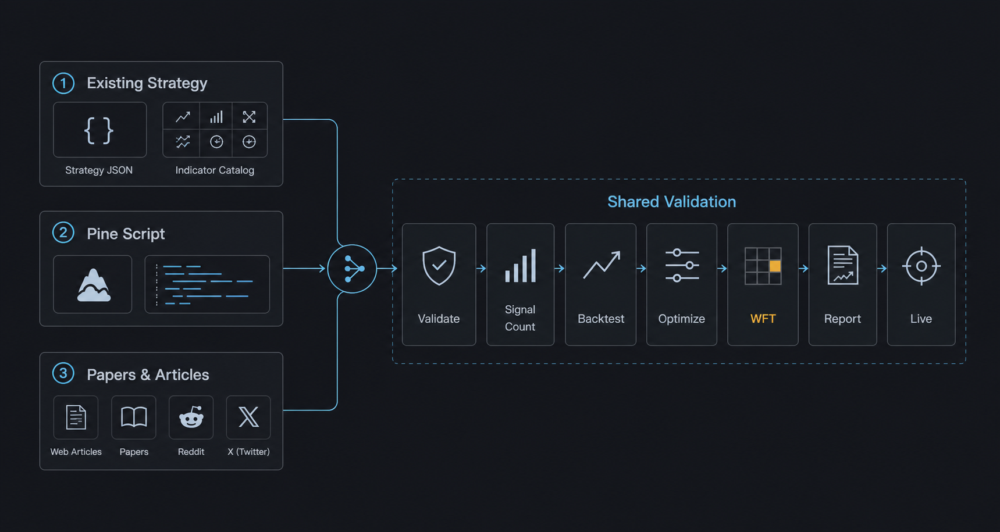

AI-Driven Strategy Exploration Workflow¶
Combining Claude Code, Codex, and similar AI coding agents with AlphaForge as the "brain" lets you autonomously drive idea → implementation → backtest → optimization → validation → live tuning.
Prerequisite
The commands and flows shown here assume the alpha-trade monorepo (a combination of alpha-forge and alpha-strategies). Binary users should substitute internal commands like op run --env-file=... with forge directly.

Why AI agents × AlphaForge¶
AlphaForge is designed so that all configuration, strategies, and execution flow through JSON / YAML / CLI. This means:
- AI agents can generate, edit, and validate strategy JSON
- Backtest and optimization results return as structured data an agent can analyze
- Slash commands let you replay the same workflow idempotently
- You can run autonomous overnight exploration without depending on rate limits or human time
The result: humans focus on "directional decisions" and "pass/fail judgment", while exploration and parameter tuning are delegated to the agent.
Manual vs. AI-driven: when to use which¶
| Goal | Recommended flow |
|---|---|
| Understand every step of AlphaForge | End-to-End Strategy Development Workflow (manual CLI) |
| Quickly explore new indicator × symbol combinations | This page (AI-driven autonomous exploration) |
| Already have a promising strategy and want to fine-tune | Start from Step 3 /grid-tune |
| Monitor drift in live strategies | Step 4 /tune-live-strategies |
Recommended coding agents¶
A comparison of agents that pair well with alpha-forge as of April 2026:
| Agent | Strengths | Rate / cost (rough) | Slash-command support |
|---|---|---|---|
| Claude Code (recommended) | File-edit precision, long-running tasks, Sonnet/Opus mix | Subscription or API metered | ✅ Native .claude/commands/*.md |
| Codex CLI | Strong baseline, OpenAI models | API metered (e.g., GPT-5) | △ Custom prompts via config |
| Cursor | IDE integration, efficient interactive flow | Subscription | △ Composer / Rules workaround |
| Aider | OSS, multi-model, git integration | Model cost only | △ Manual /<command> aliases |
The rest of this page assumes Claude Code. With other agents, point them at .claude/commands/*.md to reproduce the same flow.
Overall flow¶
Prepare: /update-market-data — bring data up to date
↓
Choose a starting point (pick one of 3 exploration scenarios)
↓
Step 1: /explore-strategies [--goal <name>] [--runs N]
└─ Auto backtest → optimize → WFT for each symbol × indicator combo
Pre-filter: Sharpe ≥ 1.0 AND MaxDD ≤ 25%
↓
Step 2: /analyze-exploration
└─ Aggregate all logs; output next recommended candidates to recommendations.yaml
↓
Step 3: /grid-tune
└─ Exhaustive grid search on promising strategies + WFT re-validation
↓
Step 4: /tune-live-strategies
└─ Drift detection and re-tuning for live strategies
Preparation: Fetch historical data¶
Before starting exploration, make sure the target symbol data is up to date.
/update-market-data runs forge data list to find registered symbols and calls forge data update on each. For brand-new symbols, run forge data fetch <SYMBOL> manually first.
Three exploration scenarios¶
AI agent × AlphaForge usage falls into three categories based on what you're starting from.
Scenario 1: Combinations from existing strategies / indicators¶
Starting point: Your existing strategy JSON files and the forge indicator list catalog.
Typical flow:
- Tell Claude Code: "Take
forge strategy show multi_asset_hmm_bb_rsi_v1_qqqas the base and add MACD to create a derivative." - The agent edits the JSON and creates
multi_asset_hmm_bb_rsi_macd_v1_qqq.json forge strategy validate→forge strategy save→forge backtest run- If Sharpe improves, run
forge optimize runto fine-tune
Tip: With /explore-strategies, you can fully delegate combination selection through reporting to the agent.
Scenario 2: Apply a TradingView Pine Script¶
Starting point: A public TradingView strategy or indicator (.pine file).
Typical flow:
- Save an interesting Pine Script locally (
tv_<name>.pine) - Import:
forge pine import tv_<name>.pine --id imported_v1 - Tell the agent: "Reorganize this strategy's
parametersandindicators, and add anoptimizer_config." - The agent reshapes the JSON and surfaces optimization targets
forge backtest run→forge optimize runto validate AlphaForge-style- If good, regenerate via
forge pine generateand verify on TradingView
Tip: Bringing Pine Script logic into JSON form unlocks all of AlphaForge's analysis (optimize, WFT, Monte Carlo).
Scenario 3: Mine forums / papers from the web¶
Starting point: X (Twitter), Reddit /r/algotrading, SSRN papers, QuantConnect / QuantStart articles.
Typical flow:
- Hand Claude Code a URL or PDF and ask: "Extract the core logic of this strategy into
indicatorsandentry_conditions." - The agent summarizes the article and drafts a strategy JSON
forge strategy validateto catch logical errors → fixforge backtest signal-countto verify signal count (conditions not too restrictive)forge backtest run→ optimize as needed- Compare the article's claimed results vs the actual backtest (often unreproducible)
Tip: Paper strategies often fail to reproduce when "data period", "symbol", or "transaction costs" differ. Letting the agent soberly compare "claimed" vs "real" results acts as a reality filter.
Step 1: Exploration phase (/explore-strategies)¶
Purpose: Find a strategy meeting target metrics from goals/<goal_name>/goals.yaml (e.g., Sharpe ≥ 1.5) by trying untried indicator × symbol combinations.
Steps (summary)¶
- Pre-flight: Read
goals/<goal_name>/goals.yaml,goals/<goal_name>/explored_log.md, and existing strategy JSON files; identify untried combinations - Strategy generation: Pick one indicator × symbol combo, generate the strategy JSON, and save under
data/strategies/<name>.json - Register → validate:
forge strategy save→forge strategy validatefor logical consistency (rollback on failure) - Data fetch:
forge data fetch <SYMBOL> --period 5y(only if not already cached) - Run the full pipeline in one command:
forge explore run <SYMBOL> --strategy <name> --goal <goal_name> --jsonSignal check → backtest → optimize → walk-forward → coverage update → DB registration — all in one step - Record outcome: Read
passed/skip_reasonfrom the output JSON, then append togoals/<goal_name>/explored_log.mdandgoals/<goal_name>/reports/YYYY-MM-DD.md. Whenpassed: falseandcleanup_done: true, strategy JSON and result JSON have already been removed automatically
> /explore-strategies # One run (default goal)
> /explore-strategies --goal stocks # Specify goal
> /explore-strategies --runs 3 # 3 runs in sequence
> /explore-strategies --goal crypto --runs 0 # Loop until rate limit or all combinations exhausted
Pass/fail criteria¶
| Phase | Criterion |
|---|---|
| Pre-filter | Sharpe ≥ 1.0 AND MaxDD ≤ 25% |
| WFT final pass | All-window mean WFT Sharpe ≥ target_metrics.sharpe_ratio in goals/<goal_name>/goals.yaml |
Idempotency¶
goals/<goal_name>/explored_log.md acts as the checkpoint, so re-runs never re-explore the same combination within a goal. Safe to interrupt and resume at any time.
Continuous runs and rate limit handling¶
Use --runs 0 to loop until a rate limit is hit or all combinations are exhausted.
| Agent | Main limit | Mitigation |
|---|---|---|
| Claude Code | 5-hour token window (plan-dependent) | Spread across night → morning → noon (3 windows) |
| Codex | RPM / TPM (per model) | Lower parallelism; serialize to one iteration at a time |
| Cursor | Monthly / daily request limit | Composer Agent is heavy; reserve for strategy generation |
Parallel execution with multiple goals
Goals are independent — each has its own explored_log.md under goals/<name>/. You can run different goals simultaneously in separate Claude Code sessions without conflicts. Backtest results are shared via exploration.db, so the same symbol × indicator combination is never backtested twice across goals.
Step 2: Analysis & narrowing down (/analyze-exploration)¶
Purpose: Aggregate all past exploration logs and scientifically recommend the next set of combinations to try.
Processing¶
- Read all of
goals/*/explored_log.md+goals/*/reports/*.md - Build a per-symbol performance table (trials, max/avg Sharpe, min MaxDD, pass count)
- Build a per-indicator-set performance table (trials, avg/max Sharpe, pass rate)
- Score untried combinations (0–10):
- Average Sharpe of similar indicators (+0–4)
- Symbol with few trials = more room to explore (+0–2)
- Indicator novelty (+0–2)
- Listed in the previous run's recommendations (+2)
- Save the report to
data/explorer/analysis/YYYY-MM-DD_HH-MM.md - Write top-5 candidates to
recommendations.yaml(read by the next/explore-strategies)
Sample output (recommendations.yaml)¶
candidates:
- rank: 1
asset: QQQ
indicators: [HMM, BBANDS, RSI, MACD]
score: 8.5
rationale: "HMM × BBANDS shows high avg Sharpe; QQQ has few trials; MACD adds novelty."
basis_sharpe: 1.32
basis_maxdd: 18.4
variant_of: multi_asset_hmm_bb_rsi_v1_qqq
Step 3: Precision tuning (/grid-tune)¶
Purpose: For a strategy that passed Step 1, expand optimizer_config.param_ranges into a Cartesian grid and run an exhaustive search; on pass, save automatically as <name>_optimized.
Steps¶
- Inspect the strategy:
forge strategy show <strategy_name>to confirmparam_rangesand grid size - Signal count check (mandatory):
forge backtest signal-count - Capture baseline:
forge backtest runto record the original strategy's Sharpe - Exhaustive grid search:
forge optimize grid <symbol> --strategy <name> --metric sharpe_ratio --top-k 20 --chunk-size 100 --max-memory-mb 4096 --min-trades 30 --save --save-format csv --yes - Review Top-20 (overfitting smell, clustering of top trials)
- Apply best:
forge optimize grid ... --top-k 1 --apply --yes - WFT validation:
forge optimize walk-forward <symbol> --strategy <name>_optimized --windows 5 - Decision: If WFT mean Sharpe exceeds the original strategy's Sharpe, pass
- Pass →
forge journal verdict <name>_optimized <run_id> pass - Fail →
forge strategy delete <name>_optimized --force+ add anoteto the original strategy's journal
- Pass →
Memory / OOM guidance¶
- 1 symbol × 5 years × 1,000-cell grid →
--chunk-size 100 --max-memory-mb 4096runs without OOM - Larger grids → drop to
--chunk-size 50 --max-memory-mb 2048 - Coarsening
stepinparam_rangesis also effective
Step 4: Live monitoring (/tune-live-strategies)¶
Purpose: For strategies running live, detect drift between live performance and backtest, and automatically re-tune the affected strategies.
Steps¶
- Detect drift:
forge live list→ for each strategy ID, runforge live compare <strategy_id>and pick those exceedinglive_tuning.sharpe_drift_thresholdingoals/<goal_name>/goals.yaml - Re-optimize: For each drifting strategy:
forge optimize run <SYMBOL> --strategy <name> --metric sharpe_ratio --saveforge optimize walk-forward <SYMBOL> --strategy <name> --windows 5
- Adoption decision: Update
<name>_optimized.jsononly if WFT mean Sharpe improves; keep current otherwise - Append the report to
data/explorer/reports/tuning-YYYY-MM-DD.md
A weekly cron or manual periodic run is sufficient. If drift persists for N consecutive weeks, consider rethinking the strategy (replace indicators, switch scenario).
Key files¶
alpha-strategies/data/explorer/
├── goals/
│ ├── default/ # Default goal (used when --goal is omitted)
│ │ ├── goals.yaml # Target metrics and exploration scope
│ │ ├── explored_log.md # Idempotent checkpoint for this goal
│ │ └── reports/
│ │ ├── YYYY-MM-DD.md # /explore-strategies daily report
│ │ └── tuning-YYYY-MM-DD.md # /tune-live-strategies report
│ ├── stocks/ # US stocks / ETF goal
│ │ ├── goals.yaml
│ │ ├── explored_log.md
│ │ └── reports/
│ ├── commodities/ # Commodities goal
│ │ └── ...
│ └── crypto/ # Crypto goal
│ └── ...
├── exploration.db # Shared backtest result cache (all goals)
├── recommendations.yaml # Next-candidate output from /analyze-exploration
└── analysis/
└── YYYY-MM-DD_HH-MM.md # /analyze-exploration output
goals/<goal_name>/goals.yaml: Defines target Sharpe, MaxDD, the set of symbols and indicator candidates, and strategies_per_run for each goal. Pass --goal <name> to /explore-strategies to select a goal; defaults to goals/default/.
goals/<goal_name>/explored_log.md: Checkpoint recording every combination tried within a goal. As long as this file exists, the same combination will never be re-explored for that goal.
exploration.db: Shared SQLite cache across all goals. If the same symbol × indicator combination has already been backtested by any goal, the cached result is reused — no duplicate backtest runs.
recommendations.yaml: Next-candidate output from /analyze-exploration. /explore-strategies reads this file and prioritizes high-scoring combinations.
Why run WFT after optimization?¶
Each step requires a Walk-Forward Test (WFT) to prevent overfitting.
Evaluating only on the in-sample period (the data used for optimization) risks parameters that over-fit that historical data. WFT addresses this by:
- Splitting the full period into multiple windows
- Running "optimize → Out-of-Sample validation" in each window
- Using the OOS mean Sharpe as the final evaluation metric
This design filters out strategies that perform well on past data but are unlikely to work going forward.
End-to-end example (explore → optimize → validate → live)¶
A worked example: validating and adopting "Add MACD to QQQ HMM × BB × RSI".
# 1. Record the idea (optional; can be linked later)
forge idea add "Add MACD to QQQ HMM×BB×RSI" \
--type improvement --tag hmm --tag qqq
# 2. Try one cycle with /explore-strategies (inside Claude Code)
> /explore-strategies
# → Auto-generates strategy JSON; runs validate, signal-count, backtest
# → Sharpe=0.95 fails the pre-filter (requires Sharpe ≥ 1.0)
# 3. Try a derivative (ask the agent to tweak parameters)
> Reduce HMM n_components to 2 for the strategy above and retry
# → Agent generates the revised JSON, re-registers, and backtests (Sharpe=1.18 passes pre-filter)
# → Auto-runs optimize run + walk-forward
# → WFT mean Sharpe=1.32 passes
# 4. Run /grid-tune for exhaustive optimization
> /grid-tune multi_asset_hmm_bb_rsi_macd_v1_qqq QQQ
# → Grid Top-1 → apply → WFT validation reaches 1.45
# → Records pass via forge journal verdict
# 5. Sensitivity / overfitting check
forge optimize sensitivity \
/path/to/data/results/optimize_multi_asset_hmm_bb_rsi_macd_v1_qqq_optimized_20260415_103021.json
# → overall_robustness_score=0.82 (passes)
# 6. Final approval in journal
forge journal verdict multi_asset_hmm_bb_rsi_macd_v1_qqq_optimized <run_id> pass
forge journal note multi_asset_hmm_bb_rsi_macd_v1_qqq_optimized "OOS pass + sensitivity 0.82. Live candidate."
# 7. Generate Pine Script for TradingView
forge pine generate --strategy multi_asset_hmm_bb_rsi_macd_v1_qqq_optimized --with-training-data
# 8. Begin live operation (deploy execution engine to VPS — out of scope here)
# 9. After a week, compare live vs backtest
forge live import-events multi_asset_hmm_bb_rsi_macd_v1_qqq_optimized
forge live compare multi_asset_hmm_bb_rsi_macd_v1_qqq_optimized
# 10. If drift is large, run /tune-live-strategies for auto re-tuning
> /tune-live-strategies
In this entire flow, humans only judge in 3 places:
- Direction of the idea (add MACD to HMM × BB × RSI)
- Top-20 review of grid-tune (sniff overfitting)
- Decision to go live
Everything else runs autonomously through the agent.
Related documentation¶
- End-to-End Strategy Development Workflow — Manual CLI walkthrough for every step
- Getting Started — Tutorial through the first backtest
- CLI Reference — Every
forgecommand parameter - Strategy Templates — Bundled strategies like HMM × BB × RSI